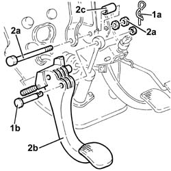

3330B26 clutch pedal - r+r
- Path
- Procedures > 33 BRAKING SYSTEM > 3330 HYDRAULIC BRAKING SYSTEM > 3330B pedal unit > 3330B26 clutch pedal - r+r
- Kind
- repair procedure (removal / refitting; the operation number is the code)
- Applies to
- all engines; all production periods
- Interactive page
- https://sloeber94.github.io/elrnDB-a156/en/#/3238063
Applies to: all engines; all production periods
 Removing
Removing
 Refitting
Refitting1. Remove the split pin (1a) and withdraw the pin (1b) connecting the clutch pump to the clutch pedal.
2. Undo the bolt (2a) and remove the clutch pedal (2b) complete with bush (2c).

Applies to: all engines; all production periods
Refitting
RemovingFit the clutch pedal complete with bush and secure it to the pedal assembly tightening the bolt to torque.
 | Fastening | Component | Ø | Value (daNm) |
|---|---|---|---|---|
- | Bolt | CLUTCH PEDAL | M8 | 2.7 - 3.4 |
Fit the pin connecting the clutch pump to the clutch pedal and fix it with its split pin.